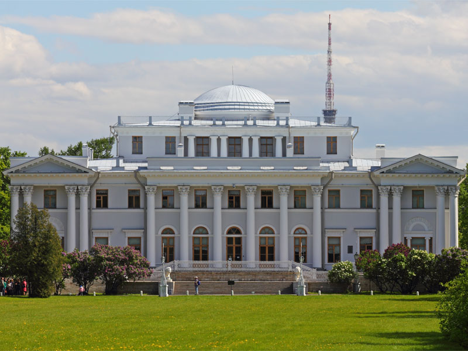
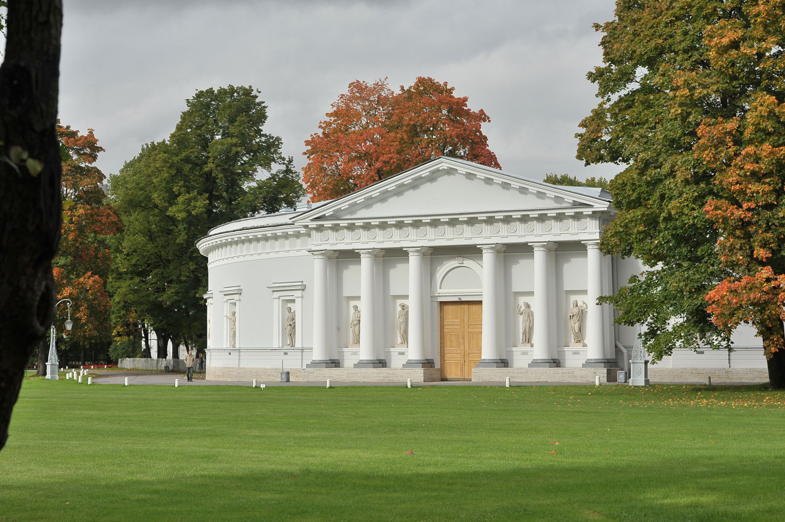
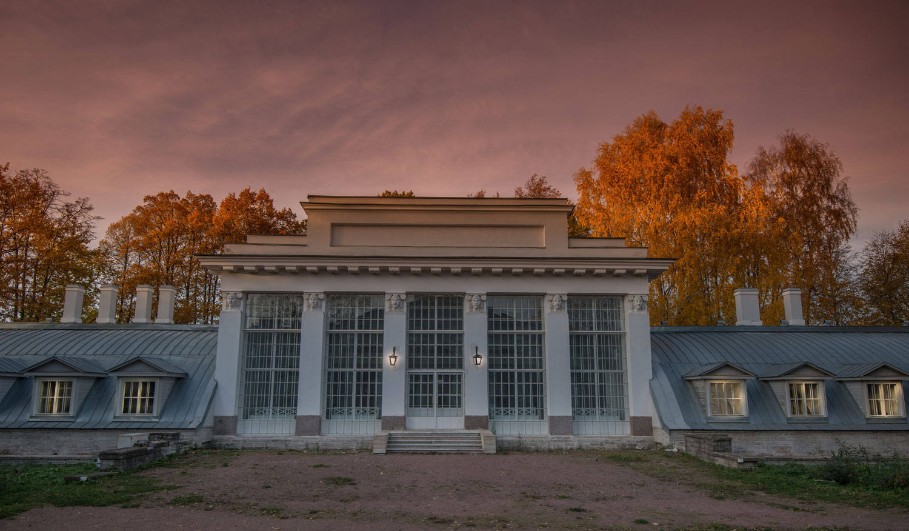
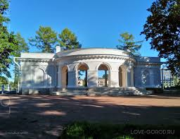
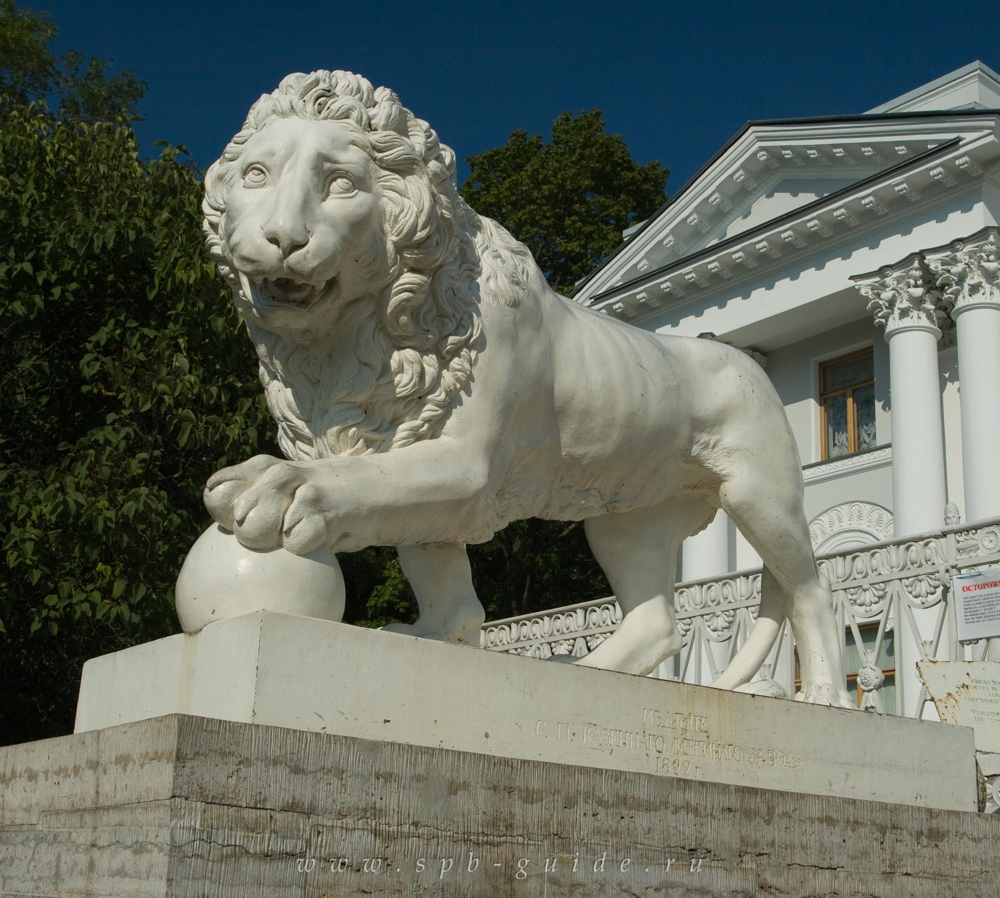

Архитектура, история и пространство Елагина острова

Классицизм, XIX век
Елагин дворец представляет собой один из наиболее значимых архитектурных памятников эпохи классицизма. Он был построен как летняя резиденция императорской семьи и отражает эстетические принципы строгости, симметрии и гармонии. Архитектурная композиция здания выстроена вокруг центральной оси, что создаёт ощущение баланса и монументальности. Интерьеры дворца включают анфилады залов, парадные помещения и декоративные элементы, характерные для императорских резиденций XIX века. Дворец тесно связан с окружающим парком, который формирует единое пространственное и визуальное восприятие ансамбля.

Инфраструктура дворца
Кухонный корпус выполнял важную утилитарную функцию в составе дворцового комплекса. Он обеспечивал приготовление пищи и логистику обслуживания резиденции. Несмотря на хозяйственное назначение, здание выполнено в архитектурной стилистике классицизма и органично интегрировано в ансамбль. Его пропорции и фасадные решения подчинены общей композиционной логике территории. Такие сооружения демонстрируют, как функциональные элементы становились частью архитектурной системы высокого уровня.

Садово-парковая архитектура
Оранжерея использовалась для выращивания экзотических растений, не приспособленных к климату северного региона. Она являлась частью хозяйственной и декоративной инфраструктуры дворцового комплекса. Конструкция здания предусматривала большие остеклённые поверхности, обеспечивающие доступ света. Это решение одновременно выполняло утилитарную и эстетическую функцию. Оранжерея дополняла парковую композицию и усиливала визуальную глубину пространства.
Культурная зона
Музыкальный павильон служил площадкой для проведения концертов и культурных мероприятий. Он был важным элементом общественной жизни дворянской среды. Архитектура павильона ориентирована на открытость и взаимодействие с окружающим пространством. Это обеспечивало акустические преимущества и визуальную связь с природным ландшафтом. Подобные объекты формировали культурную идентичность парков и общественных пространств.


Транспортный узел
Пристань завершает маршрут и выполняет транспортную функцию. Она связывает территорию острова с водными маршрутами города. Это место также служит визуальной точкой завершения прогулочного маршрута, объединяя природную и архитектурную среду в единую композицию.
Дворцово-парковый ансамбль формировался в эпоху расцвета классицизма. Архитектура подчинялась принципам симметрии, логики и пропорции.
Главной особенностью ансамбля является единство архитектуры и ландшафта. Все элементы подчинены общей композиции.
Комплекс представляет культурную и историческую ценность, являясь примером гармоничного взаимодействия архитектуры и природы.
Этот блок можно дублировать для расширения контента. Он помогает увеличить объём страницы и насыщенность информации.
Используется для масштабирования проекта и добавления аналитических или описательных данных.
Каждый такой блок может содержать исторические данные, аналитические заметки или расширенные описания объектов.